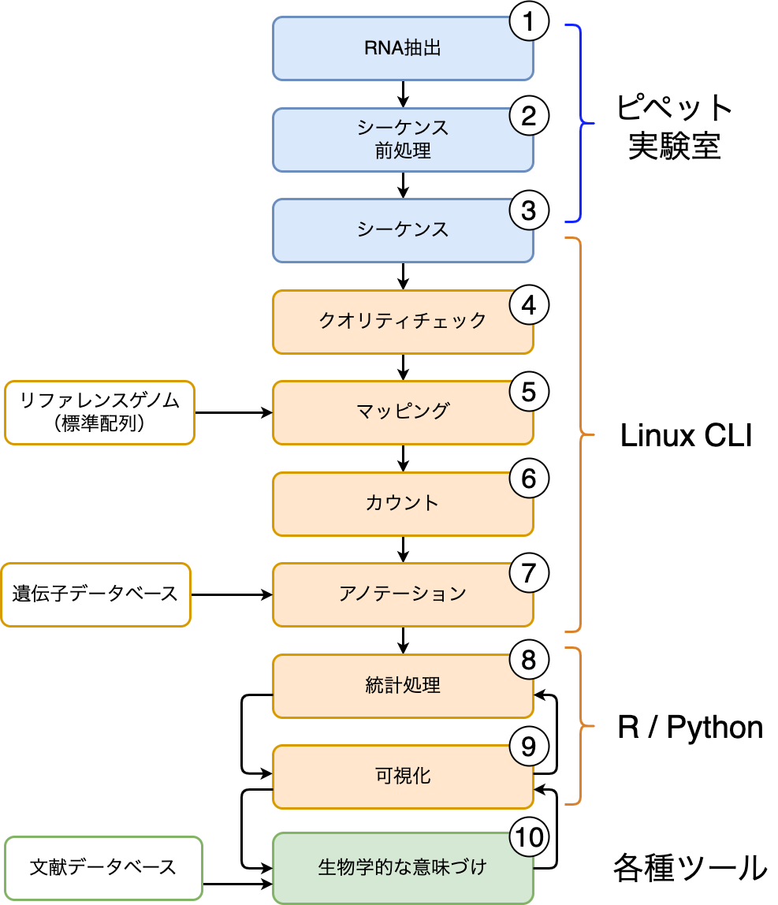

バイオインフォマティクスは結構エンジニア的だという話
みすてむず いず みすきーしすてむず Advent Calendar 2023
だれこいつ
- epsilon
- X (旧Twitter)では「沼Utsubo」とかいう名前でやってました
- 元々は細胞とかいじってた人。広く言えばバイオ系のひと。
- 今はバイオインフォマティクスを学んだり使ったりしてる(ことになっている)人
- その実態は、コピペ職人、エクセル・パワポ職人である
元々は、細胞を培養したりすり潰したり溶かしたりして生きてきた人だったのだが、 研究を進めていく過程で次世代シーケンサー（NGS)という機械を使わなきゃいけなくなり、 パソコンがそこそこ得意だったので「お前、これやれよ」と命令され、NGSの使い方を勉強していくうちに 実験データの解析も勉強しなきゃいけなくなり、データ解析の勉強してたら「それ、バイオインフォマティクス っていう分野だよ」と教えてもらい、そこからバイオインフォマティクスを学ぶようになった人。 永遠の初心者。ずっと初心者。
イントロ
いつメンの皆様、こんにちは。 はじめましての方、はじめまして。 epsilonと申します。
今日は、自分がそこそこ興味を持って、ほんの少しだけ専門として取り組んでいる(?) バイオインフォマティクスという世界のお話を少しして、 実はこの界隈って、エンジニアや情報科学の人が求められてると思うよ、 特技を活かせるよって話を、私個人の見解と感想(=お気持ちベース）で話したいと思います。
みすてむずでお話する内容ではないかなとも思いますが、違う世界の話を聞くのも面白いものなので、 なんかの片手間にどうぞ。
お前みたいなレベルの低いやつが偉そうに何語ってんだよと言われそうな気がかなりしてますが、 そういう声はあえて無視していく方向で……
大きな間違いはないように気をつけて書いているつもりですが、理解不足、勉強不足、誤解などにより 正しくない内容が記載されている可能性があります。ご利用に際してはご注意ください。
バイオインフォマティクスってなんだ？
詳しい説明はちゃんとした企業ブログ様などにお任せするとして。
ものすごく雑に言うと、バイオインフォマティクスとは「生命に関わる様々な情報を情報科学や統計学の手法を用いて解析して理解する」ことを目指す学問です。
生物に関わる情報は多種多様なものがあって、例えば、俗に「生命の設計図」なんて呼ばれるDNA配列（ゲノム） の情報もそうですし、そのゲノムからいつ、どんなタンパク質が作られるのか、という情報もそうですし、 生物の体の中でそれぞれの細胞がどんな物質をやり取りしているか、などと言うことも生命に関わる情報です。 あるいは、生命がどうやって進化してきたか、生物Aと生物Bに共通の祖先はあるのか、なんて分析もやはり、 生命に関わる情報といえるかもしれません。 もっと単純に、それぞれの個体の大きさや重さ、羽の数、葉の数、なんてのも生命に関する情報でしょう。
今ほど述べたように、生命の活動にはたくさんの「情報」が関わってきます。 そんな生物の情報をいろんな手法で解析して理解しようというのがバイオインフォマティクスで1、 それを行う人をバイオインフォマティシャンと読んだりします。
ここでは一般に「ゲノム研究」とか「遺伝子解析」とか言われることの多い、ゲノムやそれに関わる分子生物学のところの話をしてみたいと思います。
解析の流れ
では、RNAの発現解析を例に、バイオインフォマティクス解析の流れを見てみましょう。 RNAの発現解析は、どんな遺伝子が機能しているのか、どのくらいのタンパク質が作られているのか（遺伝子が発現しているのか）を解析するために行います。2

ここに挙げたのは、RNAの発現解析の流れを簡単に示したもので、青色の部分が実際に実験室でやるところ、 黄色のところがデータ処理の部分（バイオインフォマティシャンはここだけ担当することも多いです）、 緑の部分が実際に研究者がうんうん言いながら結果を解釈する部分です。とてもつらい
1.RNA抽出〜２.シーケンス準備
サンプルからRNAを抽出し、次世代シーケンサーで解析できる形に処理します。様々な試薬や（あの感染症で有名になった）PCR法などを用いて、 サンプルから取り出したRNAをシーケンサーで読める形に整形してやります。 コンピューターを用いたデータ処理を「ドライな解析（Dry lab)」というのに対して、実験室で実際にRNAを抽出するような操作を「ウェットな解析（Wet lab)」と呼ぶことがあります。
3.シーケンス
次世代シーケンサー（NGS)を用いて実際に塩基配列を読み取っていきます。 NGSでは、塩基配列を適当な長さ（50〜200文字）ぐらいの断片に切って、 それを高度に並列化して一気に読んでいきます。
どんな実験をするかにもよりますが、1回のシーケンスで数百Gbyte~1Tbyte近い量の、大量のテキストデータが出力されてきます3。
4.クオリティチェック
次世代シーケンサーでの測定により、大量の塩基配列データが出力されます。 その中には、ノイズが混ざっていたり、前処理に由来する不純物の塩基配列が混ざっていることがあるので、今後の解析の前に取り除きます。 Gabage in, Gabage outはこの世の真実ですので、このプロセスが最も重要だと考える研究者も多いです。
5.マッピング
一般的な次世代シーケンサーで読み取られた塩基配列のデータは50〜200塩基程度の 長さに断片化しています。 この断片化された配列データを、標準的な塩基配列データ（リファレンスゲノム配列）上に 適切に配置していきます。
ヒトの全塩基配列の長さはおおよそ30億文字で、そのうち遺伝子の領域(タンパク質のコードが書かれている領域)が 2万ヶ所ぐらいあると言われています。 1サンプルに含まれる断片化された配列データはおおよそ5000万〜6000万4ありますので、断片を並べるには膨大な計算量が必要となります。 そのため、マッピング処理のために高性能のワークステーションや スーパーコンピューターを用いたりします。
6. カウント
断片が正しく配置されたら、それぞれの領域にいくつの配列断片が含まれるのかをカウントします。 数えるのは普通のノートパソコンでもできますが、やはり非力なパソコンだと時間がかかります。
7.アノテーション
リファレンスゲノム上に配置された配列に対して、 遺伝子の名前やその遺伝子の機能などの情報を付け足して、後の解析で 使いやすくします。
これも大量の情報が公共のデータベースで公開されているので、 各遺伝子に関する情報を引っ張ってきて、自分の手持ちのデータとマージします。
8. 統計処理 〜 9.可視化
ここから先が本当に泥臭い作業になってきます。
7.までの処理を行うと、ようやく、どんな遺伝子がどれだけ機能していて、 どれだけのタンパク質が作られようとしているのか、 という情報を知ることができます。
ただし、ここまで得られるファイルはただの巨大な表でしかないので、 この中から、どのような遺伝子が特徴的に機能しているのかというのを 把握しなければなりません。
数万×数百行の表を俯瞰的に見られる人類はまれなので、 見やすい形にするために、特徴的な部分だけを抜き出したり、 グラフを書いたりします。
散布図やヒートマップのような単純な図から、遺伝子発現パターンから 主成分分析をかけたり、クラスタリングしたり、場合によっては 機械学習を用いて特徴的な遺伝子を見つけたりします。
この辺は計算機的な処理と生物学的な知識の融合した部分かもしれません。
10. 生物学的な意味づけ
ここからが本当の地獄だ
いくら見た目がきれいだから、統計学的にゆーいだからといって、 生物学的に意味のない反応にばかり注目していても仕方ないわけで、 自分が発見したものが過去に報告されている事例とどのように関係するか、 そもそも過去に報告されているものではないのか、というのを調べなければいけません。
大量の論文を読み込む地道な作業が必要な場合が多いのもこの部分ですが、 一方で、論文データベースを機械学習やAIですべて読みこんで、 新しいデータベースを作って検証するような研究も進んでいるようです。 (このあたりは皆さんのほうがご専門な気もします)
バイオインフォマティクスに情報科学のわかるエンジニアさんがほしい理由
以上、ざっとRNAの解析を例にして、バイオインフォマティクス解析の 一例をご紹介しました。バイオ系、生物学といっても、データ解析の部分は意外と、コンピューターで処理する部分が多いんだなと思っていただけたのではないでしょうか。 最後に、私が考えるバイオインフォマティクスで、エンジニアさんのスキルが役立つと思われる理由をお話いたします。
データがでかい
1回の検査で出てくるシーケンス情報が巨大です。シーケンスのやり方にもよりますが、圧縮したテキストデータ（gzip)で1サンプルあたり数GByteレベルということも当たり前です。 そして多くの場合、1回の実験では10サンプル以上取り扱うことも多いので、 1回の測定で数百GB〜１TBレベルのデータが吐き出されてきます。 そのため、巨大なファイルを適切に（多くの場合はコマンドラインで）取り扱うスキルが求められます。
CLI操作
たしかにWebアプリがあったり、商用ソフトはGUIで操作できることも多いのですが、 バイオインフォマティクスで使うツールは割とLinux用に作られていることが多いので CLI操作がまだまだ必須です。また、前述の通り、取り扱うファイルがクソでかい上に多量になりがちなので、 CLI操作できると幸せになります。 そして、パソコンが苦手な人、苦手ではなくてもCLIに慣れてない人は、あの真っ黒なコンソールをみた瞬間に パニックに陥ります。（そういう人、結構多いです）
Linux/Unix環境
上に書いたCLIとも共通するのですが。 解析に使うシステムがLinux/Unix環境である場合が多いので、最低限の操作が求められます。 まぁ、別に難しい処理を求められるわけではなく、基本的なファイル操作ができれば十分です。 ログファイルから必要なところを抜き出せるような人なら余裕でしょう。
自動化
実は、次世代シーケンサーで配列情報を読み取る（シーケンス）してから、生物学的な検討をするまでの段階は 割と定形処理だけで解決可能です。逆に、ここを定形処理することで、解析の客観性を担保するという意味合いもあります。 そのため、解析を定型化するためにCWL（Common workflow language)というのを用いて、一連の処理を定型化 する取り組みなどが行われています。また、これらをWeb上で行うGalaxyと呼ばれるシステムが使われることもあります。
サーバーサイド技術
取り扱う配列情報が巨大なので、ローカルマシン（特にノートパソコン）で処理するのはちょっと きついことがあり、計算サーバーに処理をぶん投げることがあります。 例えば国立遺伝学研究所では、バイオインフォマティクス専用のスーパーコンピューターが運用されており、 登録すれば誰でも無料で使うことが可能です。 スパコン以外にも、AWS(Amazon web service)やGCP(Google computing platform)上で バイオインフォマティクス用の計算資源が提供されていたり、大きな施設ではオンプレミスで 計算サーバーを持っている場合もあります。バイオインフォマティシャンが環境構築まで面倒をみることも多いので、 やはりサーバーサイドの知識があると強みになります。 また、近年では解析環境をDockerで公開していたり、実験ごとに環境を分けて管理する場合もあるので、 仮想化やコンテナの知識も重宝されると思います。
データベース検索
遺伝子の機能についての情報や、その遺伝子がどのような臓器でどんなときに働いているのかということが 世界中の研究者によって調べられており、それがデータベースとして公開されています。[^NCBI] ただ、そのデータベースから必要な情報だけを取ってくるのは結構大変です。
データベースといってもSQLが叩ける必要はないのですが、 公開されているAPIを叩けたり、CSV形式で公開されている表を操作できたり、複数のデータベースにまたがっている情報を必要な形に整形したりするスキルが求められます。
また、過去の論文などのデータベース化されていない知識も解析の対象となってきており、自然言語処理の技術が必要とされたりもします。
機械学習、統計処理
なにしろ出てくるデータ量が多いので、Excelで簡単データ集計♪という わけには行きません。
主成分分析をかける場合にも、何万遺伝子×数十サンプルの巨大行列を相手にする場合がよくあり、RやPythonでスクリプトを書いて処理することが一般的です。データの要約や特徴量の抽出など、データサイエンスの知識や技術が必要になってきます。
用いる手法も、主成分分析や散布図、線形回帰などの基本的なところから、機械学習やグラフ理論、場合によってはLLMなどの自然言語処理の処方を使った解析なども行われています。 ML/AIの知識をフル活用してバリバリ研究を進めるような研究者もいらっしゃいます。つよい。
リモートワークできる
これ、生物学・バイオ系の者にとっては画期的です。
なにしろ、データにしてしまえば、培地を交換したり餌やりをしたりする必要がなく、サーバーにアクセスさえできれば自宅からでもカフェからでも 好きなところから解析のお仕事ができます。もう、ラボに泊まり込む必要はありません。 まー、バイオインフォやってても、締切直前の徹夜仕事はかわんないんですけど
逆に、実際にラボで細胞の世話したり実験したり生物現象の分析したりする部分を生物・バイオ系のものが担当し、 バイオインフォマティクス処理を外注できるようになっています。 バイオインフォマティクス解析だけを専門的に受け付ける企業も多数出てきています。 5
さいごに
以上、非常に駆け足になりましたが、バイオインフォマティクスの世界をちょっとだけご紹介しました。
生物とコンピューターは全然別の世界のように思われるかもしれませんが、生物データの処理には情報科学の知識や技術が必要なんだ！ということが伝わっていると嬉しいです。
バイオ系の科学者は情報科学の専門家ではありません。 難しい機械学習の論文だとか、アルゴリズムの実装だとか、サーバー運用なんかはよくわかりません。 なので、つよつよエンジニアの皆様にぜひともバイオインフォマティクスの世界を知っていただき、 プロの視点から、バイオ系のにんげんどもにご指導・アドバイスをいただけると嬉しいなぁと思っております。
参考
「あらゆる分野で活用されるバイオインフォマティクスとは?詳しく解説!」,web, クリスタルメソッド株式会社,2023/11/26閲覧
中村 保一, 坊農 秀雅, 粕川 雄也, 仲里 猛留「誰もが“バイオインフォマティシャン”の時代」, Nature ダイジェスト Vol.12 No.1, DOI: 10.1038/ndigest.2015.150122, ネイチャージャパン、2015
坊農 秀雅,「研究がつなぐ未来 バイオインフォマティクスの役割 @ 「分子系統樹をつくろう」特別授業」, https://youtu.be/nPctEKs_-X8?si=z3aT28aljliVTpy3, TogoTV, 2023
平成22年度ゲノムリテラシー講座,バイオインフォマティクス推進センター
Footnotes
バイオインフォマティクスと似た(?)概念の一つにシステム生物学というのがあります。バイオインフォマティクスが生命に関する情報の解析・分析を主体としているのに対して、システム生物学は生命活動を数理モデルで捉えるという点により重きを置いているように思います。（両者を一緒にやっている研究者も多数いらっしゃいます）↩︎
なんでタンパク質のことを知りたいのにRNAを調べるのかというと、生体の中では、タンパク質はDNA→RNA→タンパク質という情報の流れで作られることがわかっていて、タンパク質が作られる前には必ず、そのタンパク質の鋳型になるRNAが作られることがわかっているためです。RNAはタンパク質に比べて分解されやすいという性質もあることから、RNAを調べると、いつどのようなタンパク質が作られようとしているのかを鋭敏に捉えることができます。また、タンパク質を直接分析するのが難しいことに対して、RNAは一度に大量のRNAを高速に測定することができるという理由もあります。↩︎
読み取った塩基（A,T,G,Cの4文字で表す）と読み取りクオリティを一緒に記録したFastqファイルという形式で出力されてきます。その実態は巨大なテキストファイルです。↩︎
次世代シーケンサーでは、正確性を上げるために、塩基配列の中の同じ部分を繰り返し計測します。そのために、1サンプルあたりに含まれる塩基配列の文字数は、100億とか1000億とかという文字数になります。↩︎
お給料いいらしいです。わたしは行ったことないけど。↩︎